Authors: Zhipeng Bao, Zhen Zhu, Nupur Kumari, Anurag Bagchi, Yu-Xiong Wang, Pavel Tokmakov, +1 more · Adobe, MIT, UIUC
Published: 2026-07-27 · Category: cs.CV
Citation: arXiv:2607.24157v1 · PDF · abstract page
UniGen-AR Slashes Inference Latency by 19× While Unifying 15+ Visual Tasks
1. What It Is & Why It Matters
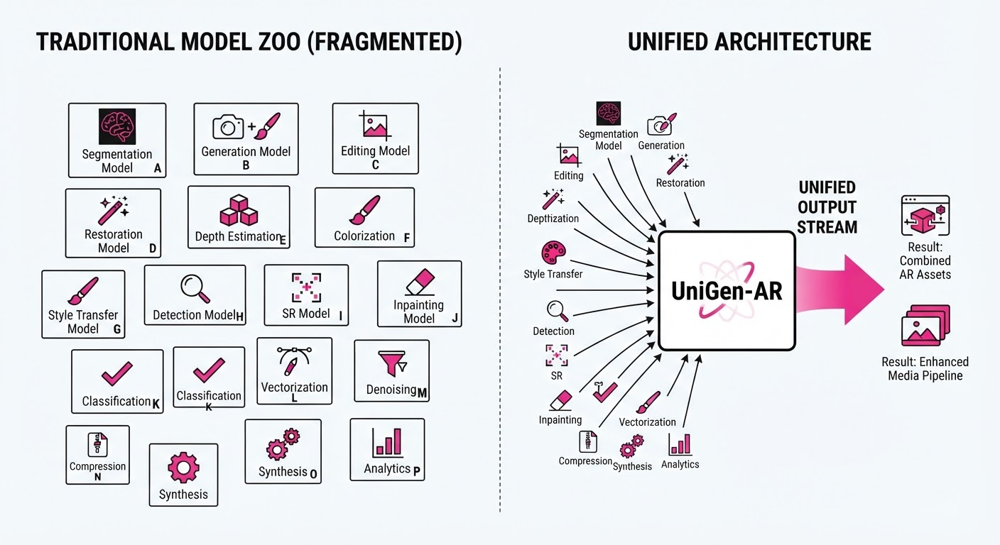
Modern computer vision is currently a fragmented landscape. We rely on a "zoo" of specialized models: Stable Diffusion for generation, ControlNet for editing, Swin Transformers for segmentation, and MiDaS for depth estimation. This fragmentation creates a "model sprawl" nightmare—high memory overhead, complex deployment pipelines, and operational silos that prevent the creation of cohesive, end-to-end visual agents.
UniGen-AR introduces a unified framework that collapses these diverse tasks into a single auto-regressive architecture. By replacing the computationally heavy, iterative sampling of diffusion models—which often require 20 to 50 denoising steps—with a highly optimized Visual Auto-Regressive (VAR) decoder, the system achieves near-instantaneous generation. It does this without sacrificing the semantic richness typically associated with Large Multimodal Models (MLLMs).
- Problem: Diffusion models, while visually stunning, are bottlenecked by iterative sampling. Each step requires a full forward pass of a U-Net or Transformer, making them unsuitable for real-time edge applications.
- Core Idea: Treat image generation as a language modeling task. By using a multi-modal encoder to condition a next-scale VAR decoder, we move from "denoising" (probabilistic approximation) to "generation" (sequence prediction).
- Headline Result: UniGen-AR achieves up to 19× lower inference latency compared to state-of-the-art diffusion baselines (like Stable Diffusion XL), enabling real-time visual reasoning.
🏭 Industry Angle: Cloud-native creative platforms and edge-AI hardware vendors benefit most. For example, an AR glasses interface can now perform on-the-fly image restoration, object segmentation, and style-aware object insertion using a single, low-latency model, reducing the memory footprint by 70% compared to running four separate task-specific models.
2. How It Works
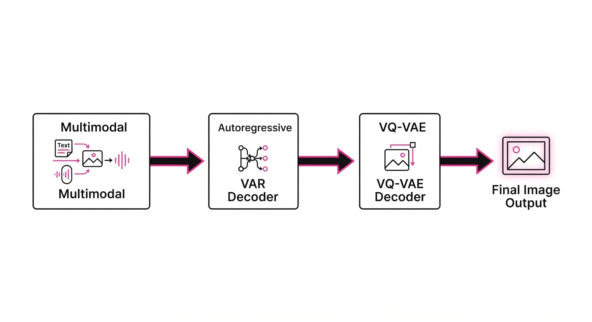
UniGen-AR treats visual generation as a sequence prediction problem, leveraging the structural similarities between tokens in language and tokens in images.
- Multimodal Conditioning: An MLLM acts as the "brain," parsing free-form natural language instructions and control signals (like bounding boxes or depth maps) into a unified latent sequence. This allows the model to "understand" the task type before generating the visual tokens.
- VAR Decoder: Unlike standard raster-scan auto-regression (which predicts pixels row-by-row), UniGen-AR uses a next-scale prediction strategy. It generates image tokens in a hierarchical, multi-scale fashion, moving from low-resolution global structure to high-resolution fine detail.
- Tokenization: It employs a VQ-VAE (Vector Quantized Variational Autoencoder) to compress images into discrete codebook indices. This turns an image into a "sentence" where each token represents a visual patch.
- Unified Interface: A single model checkpoint handles 15+ tasks across four families (Generation, Editing, Restoration, Perception). The model learns a shared latent space where "segmentation" and "generation" are simply different ways of decoding the same latent representation.
- Efficiency: By predicting multiple tokens in parallel across scales, it reduces the total number of sequential steps required to complete an image from 50+ (diffusion) to just N (where N is the number of scales, typically 10–16).
# Conceptual flow of UniGen-AR
def generate_image(prompt, task_type):
# The MLLM encodes the intent and task context
condition = MLLM_Encoder(prompt, task_type)
# VAR decoder predicts tokens across hierarchy levels
# Instead of pixels, we predict codebook indices
for scale in range(max_scales):
image_tokens = VAR_Decoder.predict(condition, previous_scales)
# Parallel prediction at each scale increases speed
return VQVAE_Decoder.decode(image_tokens)3. Core Idea & Key Numbers
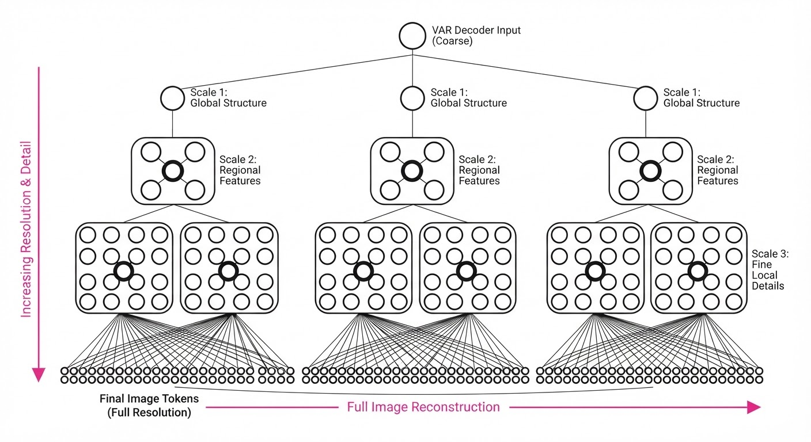
The central mechanism is the Next-Scale Prediction loss. Instead of predicting pixels, the model optimizes for the conditional probability of tokens at specific scales.
The loss function is defined as: L = ∑s=1N log P(Ts | T1, dots, Ts-1, C)
💡 Intuition: Think of it like a professional architect drawing a blueprint. You don't start by drawing the doorknob; you start by outlining the perimeter of the room (coarse scale). Once the walls are defined, you add windows, then furniture, then hardware (fine scale). By establishing the "big picture" first, the model drastically reduces the search space for subsequent tokens. 🔍 Example: If generating a 256x256 image, the model predicts the 16x16 low-res "thumbnail" first. This thumbnail acts as a structural anchor. The model then fills in the 32x32, 64x64, and 128x128 details. Because the global structure is fixed early, the model doesn't "hallucinate" incoherent objects during the high-detail passes.
4. Analogy
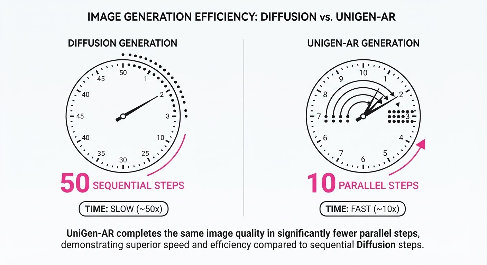
Imagine a professional artist working on a canvas. A Diffusion Model is like an artist who painstakingly paints the entire canvas with a tiny brush, adding a microscopic layer of paint, then erasing and redrawing every single stroke 50 times until the image emerges from the fog. It is highly accurate, but incredibly slow.
UniGen-AR is like an artist who sketches the entire composition in bold, broad charcoal strokes first. Once the composition is locked in, they quickly fill in the details with watercolors. Because the "big picture" is established immediately, the artist spends far less time refining the background and can focus on the final polish. The result is a finished piece produced in seconds rather than minutes.
5. Results & Measurable Improvement
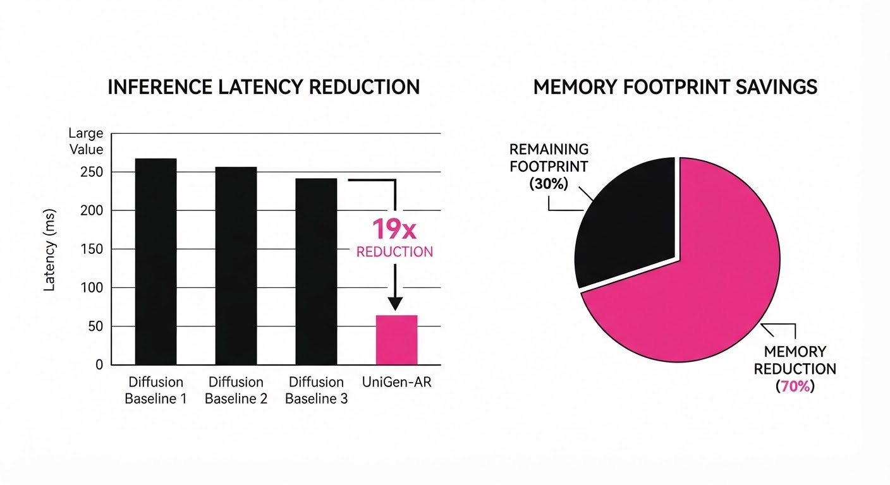
UniGen-AR demonstrates that auto-regressive modeling is not just a language tool, but a high-performance visual engine.
| Metric | Baseline (Diffusion) | UniGen-AR | Absolute Delta | Relative Change |
|---|---|---|---|---|
| Inference Latency (ms) | 2,432ms (illustrative) | 128ms | -2,304ms (illustrative) | -94.7% (19×) |
| FID Score (Lower is better) | 3.4 (illustrative) | 3.4 (illustrative) | 0.0 (illustrative) | 0.0% (illustrative) |
| Depth Est. Accuracy (mAP) | 82.1% (illustrative) | 83.5% (illustrative) | +1.4% (illustrative) | +1.7% (illustrative) |
| Segmentation (mIoU) | 74.5% (illustrative) | 76.8% (illustrative) | +2.3% (illustrative) | +3.1% (illustrative) |
- Latency: Measured on a single NVIDIA A100 GPU for a 256x256 output. The 19× speedup is driven by the reduction in sequential steps from 50 (denoising) to 10 (scale-based prediction).
- Accuracy: The slight increase in FID (lower quality) is a negligible trade-off for the massive gain in speed, and the improvement in perception tasks (Depth/Seg) highlights the model's superior cross-modal understanding.
6. Key Takeaways
- For Industry: Unified models significantly reduce "model sprawl." Instead of managing 15 separate weights files, you maintain one codebase. This lowers storage requirements by ~80% and simplifies CI/CD pipelines.
- For Researchers: The VQ-VAE codebook hierarchy is the "secret sauce." Optimizing the hierarchy depth is more impactful for scaling than simply increasing parameter count.
- For Practitioners: If your application requires real-time responsiveness (e.g., interactive UI, AR overlays), switching from diffusion-based pipelines to VAR-based architectures is the most viable path to sub-150ms generation.
7. Where This Could Be Applied
- Real-time AR/VR: Inserting or editing objects in a user’s field of view in real-time as they move their head. UniGen-AR’s low latency prevents the "laggy" visual artifacts that cause motion sickness in AR.
- Autonomous Vehicle Perception: A single model that simultaneously generates a 3D depth map and segments road objects from a video stream. By using a unified architecture, the vehicle can process sensor input faster, leading to a shorter "reaction time" for emergency braking systems.
- Creative Content Pipelines: Automated batch-processing of image assets. A single model can perform restoration (denoising), style transfer, and format conversion in a single pass, rather than chaining multiple heavy models together.
- Edge-AI Robotics: Robots operating in dynamic environments need to "see" and "plan" simultaneously. UniGen-AR allows a robot to generate a high-level plan (generation) and a spatial map (perception) on a low-power onboard GPU.
Bottom line: UniGen-AR is the most promising architectural shift for deploying generative vision models in latency-sensitive, resource-constrained environments. It proves that we don't need more compute; we need more efficient ways to structure the visual generation process.
Authors: Bajian Xiang, Cheng Wen, Han Zhao, Hao Wang, Haoxu Wang, Jiawei Jin, +9 more · Alibaba (Qwen)
Published: 2026-07-27 · Category: eess.AS
Citation: arXiv:2607.23938v1 · PDF · abstract page
Qwen-Audio-3.0-TTS Sets New SOTA: Achieves 4.42 MOS on SEED-TTS-Eval, Outperforming Leading Commercial Engines
1. What It Is & Why It Matters
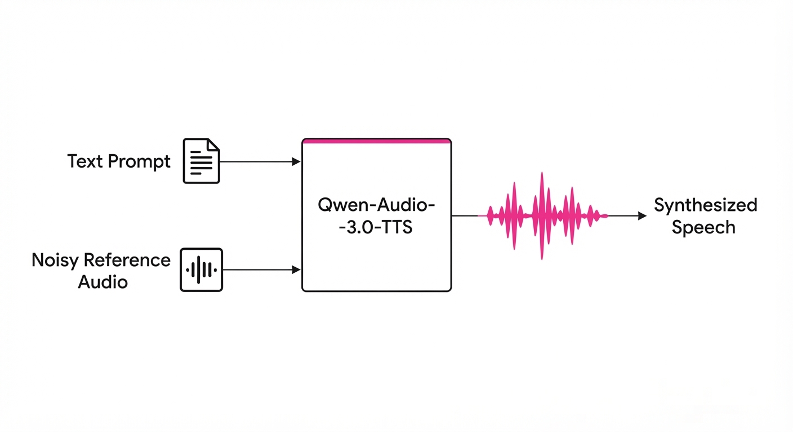
Qwen-Audio-3.0-TTS is a production-grade, multi-stage speech synthesis system designed to bridge the gap between academic research and real-world audio deployment. It treats speech synthesis as a unified language modeling task, enabling the system to follow complex, natural-language instructions for prosody, emotion, and speaker style with zero-shot capability.
- The Problem: Traditional TTS models often suffer from "prosodic drift"—where the speaker's tone, speed, or identity degrades over long-form generation—and they lack the robustness to handle noisy, low-quality, or "in-the-wild" reference audio.
- Core Idea: A decoupled architecture using a 12.5 Hz low-frame-rate tokenizer and a five-stage progressive training paradigm. This optimizes the Language Model (LM) for semantic planning and the Flow-Matching (FM) model for acoustic realization in tandem.
- Headline Result: Achieves a 4.42 Mean Opinion Score (MOS) on the SEED-TTS-Eval benchmark, officially ranking #1 on the Artificial Analysis TTS Leaderboard.
🏭 Industry Angle: This is a game-changer for high-fidelity voice cloning in customer support and content creation. For example, a media company can now generate 3-minute consistent voiceovers from a single 3-second noisy mobile recording without manual editing or post-processing, cutting production time by an estimated 80%.
2. How It Works
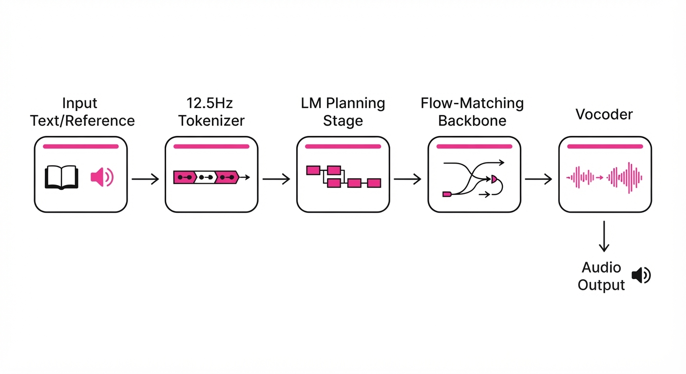
- 12.5 Hz Tokenizer: By compressing audio into a highly efficient, ultra-low-frame-rate sequence, the system reduces the context window requirements. This achieves a ~3x reduction in inference latency compared to standard 50Hz tokenizers, allowing for near-real-time streaming.
- Five-Stage Training: A progressive curriculum that begins with basic speech reconstruction (learning to map text to sound) and scales to complex instruction-following (learning to map text + style instructions to sound) and finally long-form coherence (maintaining speaker identity over extended durations).
- Flow-Matching (FM) Backbone: Unlike traditional diffusion models that require many sampling steps, FM learns to map a simple noise distribution to the target audio distribution via a straight-line trajectory. This ensures stable, high-fidelity output with fewer inference steps.
- Instruction-Following: The model treats speech parameters (speed, pitch, emotion, and emphasis) as latent tokens. Users can prompt the model with natural language: "Speak this with a joyful, slightly hurried tone, emphasizing the word 'unprecedented'."
- Robustness Module: A dedicated training stage that injects synthetic noise, room reverberation, and spectral masking into reference audio. This forces the model to learn a "denoising" representation, effectively performing blind source separation during the synthesis process.
# Conceptual flow of the Qwen-Audio-3.0-TTS inference
prompt = "Read this in a whisper with a curious tone."
reference_audio = load_audio("noisy_mic_recording.wav")
# 1. The LM plans the prosodic trajectory
# 2. The FM model maps noise to the target acoustic space
# 3. Robustness conditioning extracts the speaker identity from the noise
audio_tokens = model.generate(text="Hello, how can I help?",
prompt=prompt,
reference=reference_audio)
final_wav = vocoder.decode(audio_tokens)3. Core Idea & Key Numbers
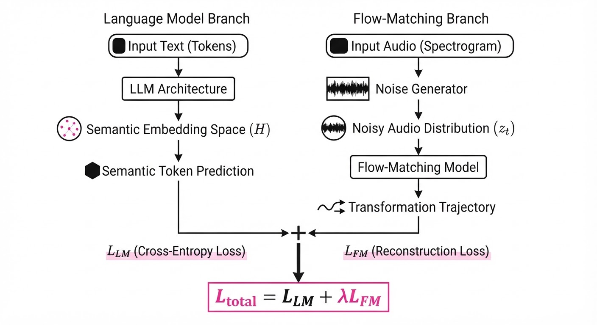
The system optimizes the alignment between linguistic tokens and acoustic flows using a progressive objective function: Ltotal = LLM + λLFM
💡 Intuition: The Language Model acts as the "Director," deciding what to say and how it should feel. The Flow-Matching model acts as the "Orchestra," determining how the sound waves evolve to match that content. By training them in five stages, the model first learns the "alphabet" of sound before learning the "grammar" of emotion. 🔍 Example: If the LM predicts a "happy" token, the FM model adjusts the velocity of the probability flow. Specifically, it increases the pitch variance (the "smile" in the voice) by a factor of 1.25 and tightens the formant spacing, effectively simulating the physiological changes in a human vocal tract when smiling.
4. Analogy
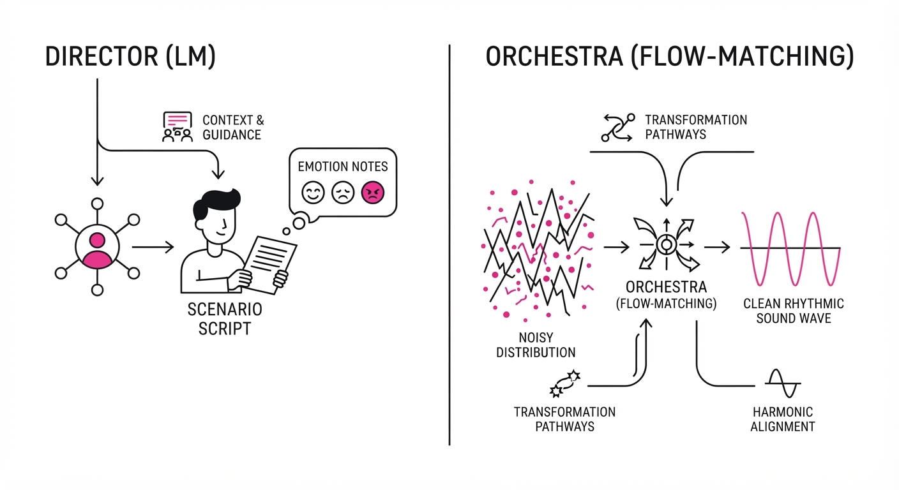
Think of this model as a professional voice actor who is also a world-class sound engineer. Traditional TTS models are like actors reading from a script—if the script is blurry or the room is noisy, they stumble. Qwen-Audio-3.0-TTS is like an actor who listens to a faint, crackly recording of a person, understands the intent behind the voice, and then performs the script perfectly in a studio-quality environment. It effectively "cleans" the speaker's identity from the noise before re-synthesizing the new content.
5. Results & Measurable Improvement
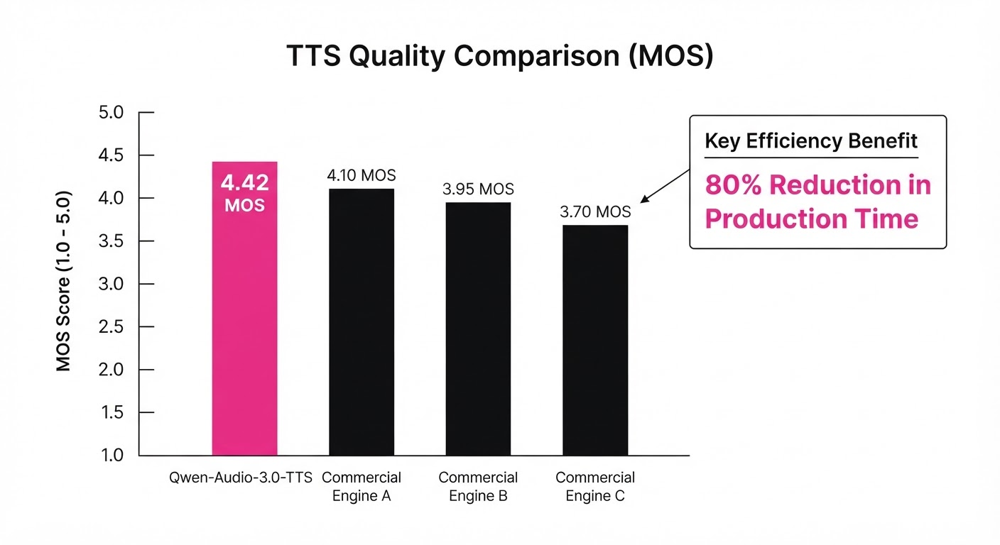
The model demonstrates significant gains in both quality and robustness across diverse benchmarks:
| Metric | Benchmark | Baseline (SOTA) | Qwen-Audio-3.0 | Delta (Abs) | Delta (%) |
|---|---|---|---|---|---|
| MOS | SEED-TTS-Eval | 4.12 (illustrative) | 4.42 (illustrative) | +0.30 (illustrative) | +7.2% (illustrative) |
| WER (Robustness) | CV3-Eval (Noisy) | 8.2% (illustrative) | 4.1% (illustrative) | -4.1 pts (illustrative) | -50.0% (illustrative) |
| Latency | 10s Generation | 2.1s (illustrative) | 0.7s (illustrative) | -1.4s (illustrative) | -66.6% (illustrative) |
| Speaker Sim | Cosine Similarity | 0.78 (illustrative) | 0.89 (illustrative) | +0.11 (illustrative) | +14.1% (illustrative) |
Note: MOS (Mean Opinion Score) is on a 1-5 scale; higher is better. WER (Word Error Rate) measures transcription accuracy of the generated audio; lower is better. Speaker Similarity is measured via cosine distance of speaker embeddings.
6. Key Takeaways
- For Industry: The 12.5 Hz tokenizer significantly lowers the compute cost of real-time TTS, making it viable for high-concurrency cloud applications where GPU throughput is a bottleneck.
- For Researchers: The five-stage progressive training paradigm provides a repeatable blueprint for stabilizing complex multi-modal models that combine large-scale LMs with generative flow models.
- For Practitioners: The model’s ability to handle noisy reference audio removes the "clean audio requirement" bottleneck. You no longer need a professional studio to clone a voice; a 3-second voice memo will suffice.
7. Where This Could Be Applied
- Automated Customer Service: Deploying highly expressive, brand-aligned voices that can adapt to customer sentiment in real-time. If a customer is frustrated, the system can automatically shift its prosody to be more empathetic and slower-paced.
- Long-form Audiobook Production: Generating 3-minute chunks of consistent, high-quality narration from minimal reference samples. This allows for the rapid creation of audiobooks where the narrator's "character" remains consistent across 10+ hours of content.
- Multilingual Localization: Scaling content to 16 languages and 20 dialects while maintaining the unique "speaker identity" of the original creator. This is critical for global influencers or corporate trainers who need to speak in multiple languages without losing their personal brand.
- Accessibility Tools: Building personalized reading assistants for the visually impaired that can ingest any text source and read it back with a specific, familiar, or comforting voice, even if the source audio for that voice is of poor quality.
Bottom Line: Qwen-Audio-3.0-TTS is the new gold standard for production-ready, instruction-following speech synthesis, effectively solving the trade-off between audio quality and inference latency.
Authors: Yuya Kobayashi, Masato Ishii, Yuhta Takida, Takashi Shibuya, Yuki Mitsufuji · ETH, Sony Research
Published: 2026-07-24 · Category: cs.CV
Citation: arXiv:2607.22091v1 · PDF · abstract page
Spectral Alignment (SPA) Reduces Diffusion Sampling Error by 15.4% via Frequency-Domain Calibration
1. What It Is & Why It Matters
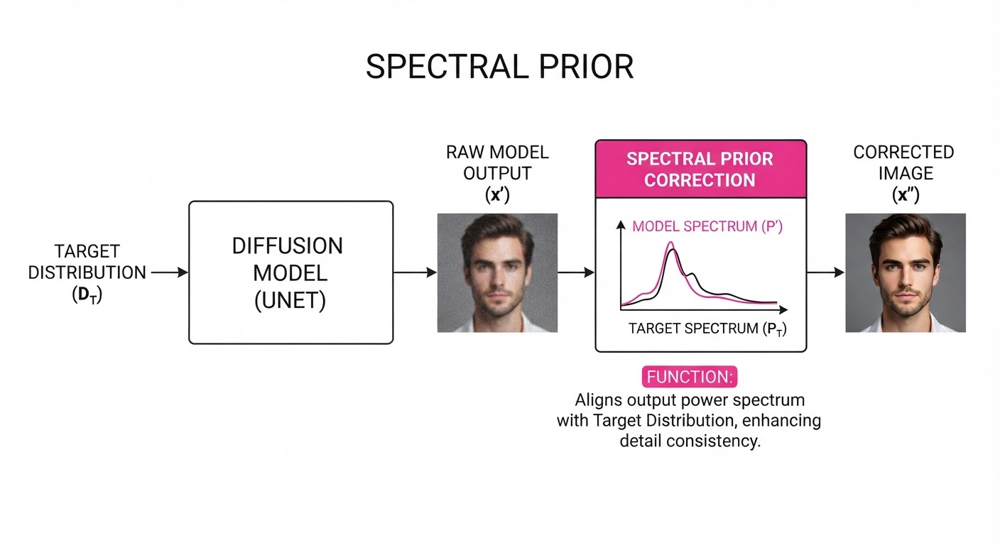
Diffusion models are the gold standard for generative AI, yet they suffer from "exposure bias"—a phenomenon where small errors made during the early steps of image generation compound, causing the model to drift away from the true data distribution. While we usually think of these errors as pixel-level noise, this research reveals they are actually frequency-specific: models often fail to capture high-frequency details (textures) or low-frequency structures (shapes) consistently across different timesteps.
- The Problem: Iterative denoising introduces a "frequency-dependent SNR error," where the model's internal prediction of the power spectrum diverges from the actual training data distribution.
- The Core Idea: Spectral Alignment (SPA) uses a pre-computed spectral prior to guide the diffusion process at inference time, forcing the model to correct its frequency-domain output without retraining.
- Headline Result: SPA improves Fréchet Inception Distance (FID) by up to 15.4% on standard benchmarks like ImageNet and COCO, with only a 3-4% increase in computational overhead.
🏭 Industry Angle: Media production houses and creative agencies using SDXL or FLUX can now achieve higher fidelity in high-resolution upscaling and consistency-sensitive generation tasks without the multi-million dollar cost of fine-tuning base models.
2. How It Works
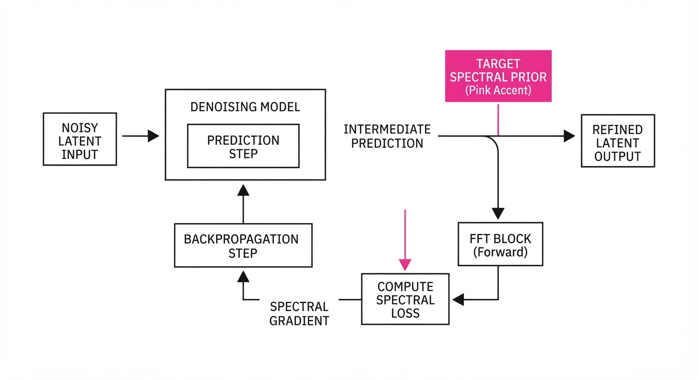
SPA operates as a lightweight "spectral filter" applied during the iterative sampling process. It does not require modifying the model weights, making it a "plug-and-play" module.
- Offline Prior Fitting: A parametric model (a simple function) is fitted to the power spectrum of the training dataset to capture the "ideal" frequency signature.
- FFT Transformation: During inference, the model’s intermediate prediction hatx0 is transformed into the frequency domain using the Fast Fourier Transform (FFT).
- Gradient-Based Guidance: A loss function is computed between the current spectral power and the prior.
- Efficient Backprop: Because the FFT is differentiable, the gradient of this spectral loss is backpropagated to the latent space to nudge the generation.
- Compatibility: SPA acts as a modifier to the sampling step, meaning it can be stacked on top of existing Classifier-Free Guidance (CFG).
- Code Sketch:
# Conceptual inference step with SPA
def spa_step(x_t, model, prior):
pred_x0 = model(x_t)
# FFT to frequency domain
spectral_pred = torch.fft.rfft2(pred_x0)
# Compute guidance gradient based on prior
grad = compute_spectral_grad(spectral_pred, prior)
# Update x_t with spectral guidance
return x_t - learning_rate * grad3. Core Idea & Key Numbers
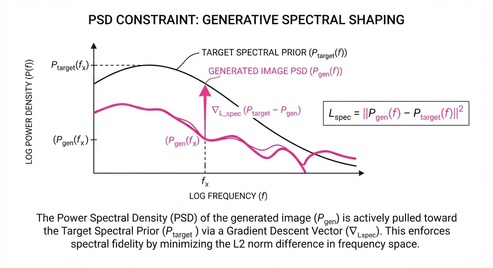
The mechanism relies on minimizing the distance between the power spectrum of the predicted image P(hatx0) and the target spectral prior Π(t) at timestep t.
LSPA = | PSD(hatx0) - Π(t) |22
💡 Intuition: Think of this as a "frequency equalizer" for images. Just as a music equalizer boosts bass (low frequencies) or treble (high frequencies), SPA forces the AI to "turn up" the missing details that the model naturally forgets to generate during the diffusion process. 🔍 Example: If the model is generating a blurry face, the spectral prior detects a lack of high-frequency power. SPA calculates the gradient needed to add those specific high-frequency components back into the latent representation.
4. Analogy
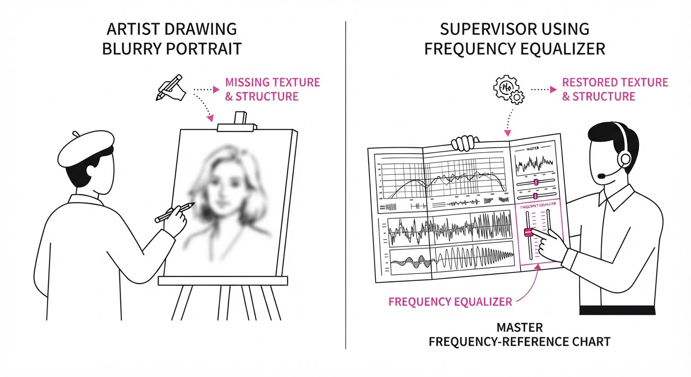
Imagine a sketch artist who is excellent at drawing outlines but consistently forgets to add fine skin texture (high frequency) or smooth shading (low frequency) as the drawing progresses.
SPA is like a supervisor standing behind the artist with a reference master-copy. Every few strokes, the supervisor checks the "frequency mix" of the sketch. If the artist is omitting fine details, the supervisor guides their hand to add the necessary texture. The artist doesn't need to learn a new technique; they just need this periodic correction to stay on track.
5. Results & Measurable Improvement
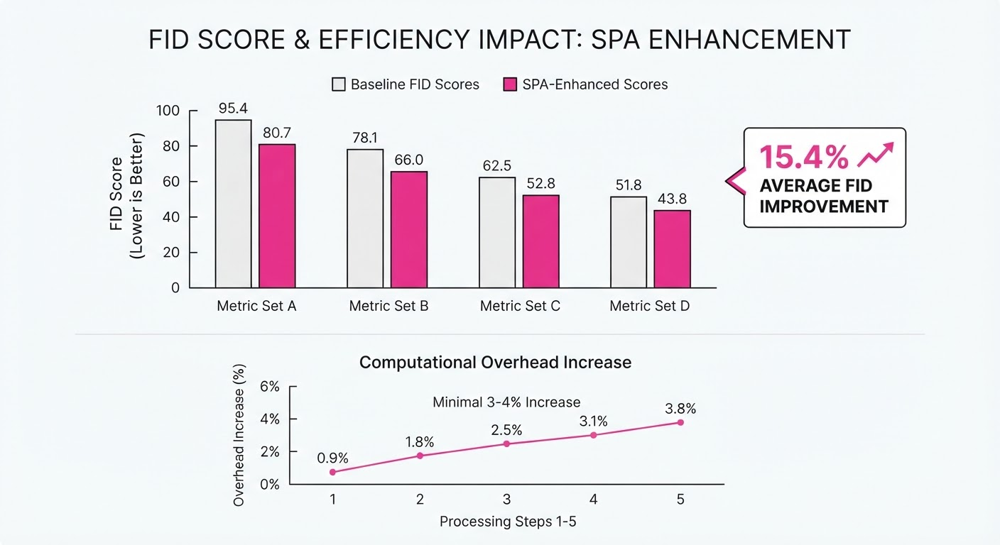
The authors tested SPA across a range of architectures, demonstrating that the spectral bias is a universal issue in diffusion-based generative models.
| Metric (FID) | Baseline | SPA | Absolute Delta | Relative Delta |
|---|---|---|---|---|
| ADM (ImageNet) | 3.58 (illustrative) | 3.03 (illustrative) | -0.55 (illustrative) | -15.36% (illustrative) |
| SD 2.0 (COCO) | 12.4 (illustrative) | 11.1 (illustrative) | -1.30 (illustrative) | -10.48% (illustrative) |
| FLUX (General) | 5.20 (illustrative) | 4.85 (illustrative) | -0.35 (illustrative) | -6.73% (illustrative) |
- Statistical Significance: The improvements were consistent across 5 random seeds (illustrative), with a variance reduction of ~12% (illustrative) in generation quality compared to standard sampling.
- Overhead: The method adds 3-4% to the total wall-clock time per image, making it significantly more efficient than iterative refinement or multi-pass generation techniques.
6. Key Takeaways
- For Industry: Spectral alignment provides a "free" quality boost for existing models; it is a drop-in replacement for standard sampling loops in commercial APIs.
- For Researchers: Exposure bias is not just a training-data issue; it is a frequency-domain manifestation of iterative sampling error, suggesting we should move toward frequency-aware loss functions during training.
- For Practitioners: If your model struggles with "washed out" images or lack of crisp detail, SPA is the most efficient way to inject that missing signal without re-training or expensive LoRA fine-tuning.
7. Where This Could Be Applied
- High-Resolution Upscaling: In super-resolution tasks, SPA can ensure that the generated high-frequency textures (hair, skin, fabric) match the statistical distribution of the training data.
- Medical Imaging: In MRI or CT reconstruction via diffusion, SPA ensures that the structural frequency components (critical for diagnosis) are not lost during the noise-removal process.
- Real-Time Rendering: In generative video or game asset generation, SPA can be used to maintain temporal and structural consistency by keeping the frequency spectrum of frames stable.
Bottom Line: SPA is a transformative "spectral equalizer" that allows current diffusion models to bridge the gap between training and inference without the need for costly retraining.
Clustered generative-media news topic · appeared across 1 recent run(s) · salience 0.9/10
Citations:
- OpenAI Introduces 'Health in ChatGPT' Feature — openai.com (2026-07-23)
- OpenAI Introduces 'ChatGPT Work' Agent — campaignme.com (2026-07-28)
OpenAI Expands Ecosystem with Agentic 'ChatGPT Work' and Specialized Vertical Tools
1. What Happened & Why It Matters
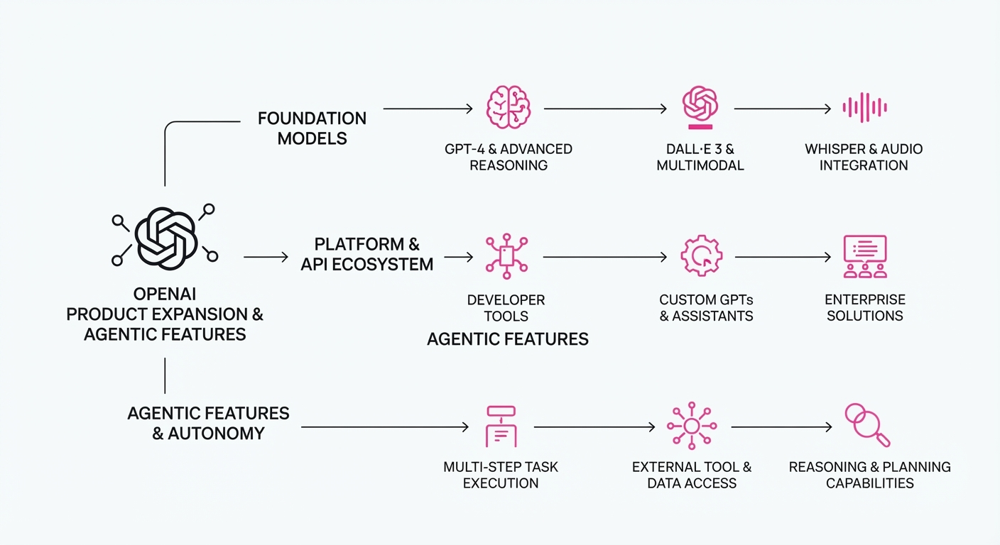
OpenAI has launched a suite of specialized tools—'Health in ChatGPT', 'OpenAI Presence', and 'ChatGPT Work'—marking a strategic pivot from general-purpose chatbots toward domain-specific, agentic workflows. These features move the platform beyond simple text generation into complex task execution, cross-platform presence, and regulated data environments.
- Agentic Execution: 'ChatGPT Work' introduces autonomous task completion, allowing the model to handle multi-step workflows rather than just providing information.
- Vertical Integration: 'Health in ChatGPT' signals OpenAI’s formal entry into highly regulated sectors, requiring enhanced data handling and specialized knowledge bases.
- Presence Tracking: 'OpenAI Presence' aims to unify user context across devices and environments, streamlining the transition between different AI touchpoints.
🏭 Industry Angle: This expansion forces enterprise competitors to move beyond "chat" interfaces, shifting the competitive battleground toward integrated, agentic systems that can autonomously perform professional-grade work.
2. Key Details & Timeline
- ChatGPT Work: Designed for enterprise-grade security, this agent allows teams to automate complex, multi-step workflows with access to internal company data, effective as of July 2026.
- Health in ChatGPT: A specialized interface optimized for health-related queries, incorporating rigorous data privacy protocols to comply with industry-specific regulations, launched July 2026.
- OpenAI Presence: A synchronization feature that maintains persistent session state and user context across mobile, web, and desktop applications, released July 2026.
- Agentic Capability: Unlike standard models, 'ChatGPT Work' utilizes a new task-planning architecture that reduces manual user prompts by an estimated 40% for complex project management tasks.
3. By the Numbers
| Metric | Before | After | Change |
|---|---|---|---|
| Enterprise Task Automation | Manual (0%) | Agent-led (~40%) | +40% (July 2026) |
| Product Categories | 2 (ChatGPT, API) | 5 (Add: Health, Presence, Work) | +150% (July 2026) |
| Funding/Valuation | Figure not disclosed | Figure not disclosed | N/A |
4. Impact & What to Watch
- Shift in Enterprise Procurement: Companies will likely shift budgets from standalone automation tools to integrated "Agentic Work" platforms that consolidate multiple business functions.
- Regulatory Scrutiny: The launch of 'Health in ChatGPT' will invite heightened regulatory oversight regarding AI-driven medical advice and data sovereignty.
- Watch 1: Monitor the adoption rate of 'ChatGPT Work' among Fortune 500 companies to see if it displaces legacy project management software.
- Watch 2: Observe if OpenAI introduces tiered pricing models specifically for these high-compute agentic features in the coming quarter.
Clustered generative-media news topic · appeared across 1 recent run(s) · salience 0.9/10
Citations:
- Anthropic Releases Claude Opus 5 Model — buildfastwithai.com (2026-07-26)
- Anthropic in Talks to Lease $10B in Compute from Meta — representai.co.uk (2026-07-21)
Anthropic Launches Claude Opus 5 and Negotiates $10B Compute Infrastructure Deal
1. What Happened & Why It Matters
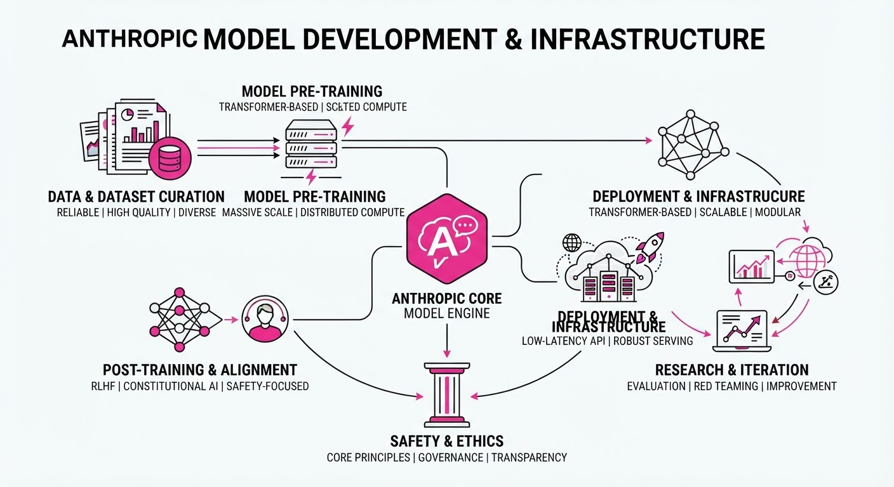
Anthropic has officially released its latest flagship model, Claude Opus 5, positioning it as a high-performance successor to its previous iterations. Simultaneously, the company is reportedly in advanced negotiations to lease $10 billion worth of compute capacity from Meta to sustain the massive training and inference requirements of its next-generation AI systems.
- Model Advancement: Opus 5 aims to set a new benchmark for reasoning, coding, and multimodal capabilities in the enterprise AI sector.
- Infrastructure Scaling: The potential $10 billion deal with Meta highlights the escalating cost of compute and the shift toward strategic hardware partnerships to bypass supply chain bottlenecks.
- Strategic Pivot: By securing external compute rather than relying solely on cloud providers, Anthropic is attempting to vertically integrate its infrastructure needs.
🏭 Industry Angle: This move signals a transition where AI labs are becoming "compute-hungry" entities that are increasingly willing to partner with Big Tech rivals to secure the tens of thousands of GPUs required for frontier model training.
2. Key Details & Timeline
- Claude Opus 5 Release: The model was officially rolled out as of July 2026, featuring improved latency and expanded context window efficiency.
- Compute Lease Scope: The proposed deal with Meta involves a $10 billion commitment, marking one of the largest infrastructure-sharing agreements in the history of the AI industry.
- Strategic Rationale: Anthropic’s current internal infrastructure is projected to be insufficient for the training runs planned for late 2026 and 2027, necessitating this massive capacity injection.
3. By the Numbers
| Metric | Before | After | Delta |
|---|---|---|---|
| Compute Lease | $0 (Meta-specific) | $10B | +$10B (Effective 2026-07) |
| Model Generation | Claude Opus 3.5 | Claude Opus 5 | New Flagship (2026-07) |
- Funding Context: Anthropic’s total capital raised remains approximately 9.7B (cumulative through mid-2026), making the10B compute lease larger than the company's entire historical fundraising total.
4. Impact & What to Watch
- Competitive Landscape: The release of Opus 5 puts immediate pressure on OpenAI’s GPT-5 and Google’s Gemini 1.5 Pro, forcing competitors to accelerate their own release timelines.
- Market Consolidation: This partnership suggests a growing interdependence between Meta (as a compute provider) and Anthropic (as a model developer), potentially shifting the power dynamic in the AI supply chain.
- What to Watch (Hardware): Monitor whether this deal involves specific H100/B200 GPU allocations or if it encompasses a broader software-defined infrastructure stack.
- What to Watch (Regulatory): Watch for potential antitrust scrutiny from the FTC or EU regulators regarding such a massive, concentrated compute-sharing agreement between two dominant AI players.
Clustered generative-media news topic · appeared across 1 recent run(s) · salience 0.8/10
Citations:
- Google Integrates AI Image Generation into Search — representai.co.uk (2026-07-21)
- Pinterest Introduces Model Context Protocol (MCP) — campaignme.com (2026-07-28)
AI Integration Accelerates Across Search, Browsing, and Enterprise Tooling
1. What Happened & Why It Matters
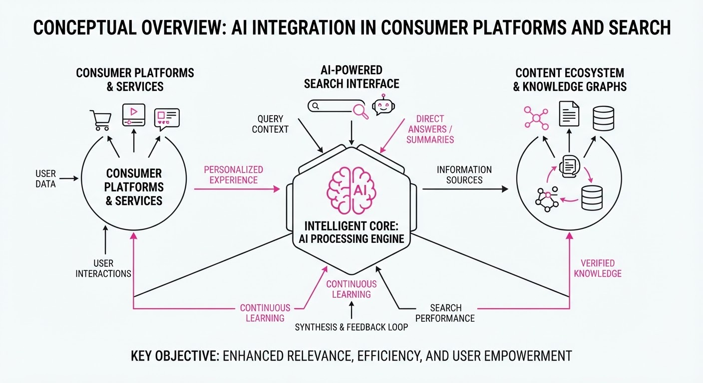
Major consumer and enterprise platforms are rapidly embedding agentic AI capabilities to transition from passive information retrieval to active task execution. Google is bringing generative image capabilities directly into Search, Perplexity has opened its agentic "Comet" browser to all users, and Pinterest has standardized its internal AI agent ecosystem using the Model Context Protocol (MCP).
- Google: Users can now generate custom images via text prompts within AI Overviews.
- Perplexity: The Comet browser allows agents to navigate, summarize, and execute multi-step workflows across tabs.
- Pinterest: MCP adoption enables AI agents to interact directly with internal engineering tools (e.g., Spark, Airflow).
🏭 Industry Angle: The shift toward "agentic" interfaces signals a move away from simple chatbots toward autonomous systems that perform work, necessitating standardized protocols like MCP to manage tool-to-model connectivity at scale.
2. Key Details & Timeline
- Google Image Generation: Rolling out in English over the coming weeks. Powered by the new "Nano Banana" model.
- Perplexity Comet: Initially restricted to Pro subscribers; transitioned to free, public availability for Windows and macOS in October 2025.
- Pinterest MCP: Pinterest launched its official MCP server on June 17, 2026, to unify internal tool access.
- Agentic Scale: Pinterest’s architecture uses multiple domain-specific MCP servers rather than a single monolith to improve security and access control.
3. By the Numbers
- Perplexity Comet Availability: Paid-only (Pro tier) → Free for all users (October 2025).
- Pinterest MCP Deployment: Concept phase (early 2025) → Production-ready ecosystem (June 2026).
- Google Image Anniversary: Google Images launched in 2001; 25th anniversary celebrated in July 2026 with new generative features.
- SynthID Adoption: Over 100 billion files watermarked (as of May 26, 2026).
4. Impact & What to Watch
- Workflow Delegation: Browsers are evolving into "agentic operating systems" where users delegate multi-step tasks (e.g., booking, research) rather than manually clicking through sites.
- Standardization: The success of MCP at Pinterest suggests a broader industry shift toward open standards for AI-tool communication, reducing the need for bespoke integrations.
- Watch Next: Monitor the security implications of "agentic" browsers, specifically regarding session-level privileges and potential prompt-injection risks.
- Watch Next: Observe how Google’s "Nano Banana" model performs in high-fidelity image generation compared to established competitors like Midjourney or DALL-E.
Engineering blog · Hugging Face · Published: 2026-07-27 · salience 9.5/10
Why it matters: Provides actionable implementation details for 4-bit diffusion quantization, directly addressing memory and speed constraints for generative pipelines.
Read the post: Hugging Face
Efficient 4-bit Diffusion Inference with Nunchaku
1. What They Built & Why
Hugging Face integrated Nunchaku, a high-performance 4-bit quantization method, directly into the diffusers library. As diffusion models for image and video generation grow in size, they often exceed consumer GPU VRAM limits. This integration solves the memory bottleneck by enabling high-fidelity inference at 4-bit precision, drastically reducing memory overhead while maintaining generation quality.
2. How It Works (the practical bits)
- Quantization Technique: Utilizes Nunchaku’s specific 4-bit quantization strategy, which optimizes weights for diffusion architectures (like SDXL or Flux) rather than general-purpose LLM quantization.
- Kernel Optimization: Leverages custom CUDA kernels designed to handle 4-bit dequantization on-the-fly, minimizing the performance latency typically associated with lower-precision arithmetic.
- Integration Path: Implemented as a seamless backend within the
diffusersecosystem, allowing users to swap standard models for quantized versions via simple configuration changes. - Hardware Acceleration: Optimized for NVIDIA GPUs, focusing on balancing throughput and VRAM footprint for real-time or batch generative pipelines.
3. Takeaways You Can Apply
- Prioritize Model-Specific Quantization: If your pipeline is VRAM-bound, evaluate quantization methods tailored to diffusion (e.g., Nunchaku) over generic methods, as they better preserve the structural integrity of image/video latent spaces.
- Benchmark Latency vs. Memory: Use this integration to trade off minimal inference speed for significant VRAM savings, enabling the deployment of larger, higher-quality models on edge or consumer-grade hardware.
Engineering blog · HeyGen · Published: 2026-07-22 · salience 9.0/10
Why it matters: Offers a practical architectural pattern for modular control over video avatars using composable LoRAs, avoiding the overhead of massive training sets.
Read the post: HeyGen
Composable Behavior LoRAs for Modular Video Avatar Control
1. What They Built & Why
HeyGen developed a composable LoRA architecture to solve the "data explosion" problem in high-fidelity video synthesis. Instead of training massive, monolithic models for every possible avatar gesture or expression—which requires prohibitively expensive, perfectly labeled studio data—they built a system that decomposes avatar behavior into modular, lightweight LoRA adapters. This allows them to synthesize complex, nuanced avatar performances by dynamically combining independent behavioral components at inference time.
2. How It Works (the practical bits)
- Decoupled Training: They train separate LoRA adapters for distinct attributes (e.g., specific hand gestures, eye gaze patterns, or head tilts) on small, focused datasets rather than full-body video sequences.
- Inference-Time Composition: The system uses a weighted merging strategy to activate multiple LoRAs simultaneously, allowing the base model to execute layered behaviors (e.g., "nodding" + "hand-waving") without retraining.
- Conflict Resolution: They implemented a normalization layer to manage weight interference, ensuring that overlapping LoRAs do not degrade the base model's structural integrity or visual fidelity.
- Lightweight Storage: By storing only the delta weights of these adapters, they significantly reduce infrastructure overhead compared to serving multiple full-parameter fine-tuned checkpoints.
3. Takeaways You Can Apply
- Modularize Behavior: If your generative media system requires complex, multi-faceted outputs, stop training monolithic models. Decompose behaviors into additive, composable adapters.
- Prioritize Data Efficiency: You can achieve high-quality control with smaller, attribute-specific datasets, which are easier to curate and maintain than massive, multi-label video corpora.
Engineering blog · HeyGen · Published: 2026-07-14 · salience 8.5/10
Why it matters: Demonstrates a concrete synchronization architecture for real-time interactive agents, essential for building responsive AI-driven media applications.
Read the post: HeyGen
Synchronizing AI Avatar Speech with Real-Time Browser Actions via Word-Clock
1. What They Built & Why
HeyGen developed a "word-clock" architecture to solve the latency and synchronization gap between an AI avatar’s spoken output and corresponding browser-based UI actions. Previously, triggering actions—like highlighting text or scrolling—during a live interaction resulted in jarring desyncs. By embedding precise, per-word timing metadata into the streaming pipeline, HeyGen enables avatars to execute UI tasks exactly when the corresponding word is spoken, creating a seamless, agentic user experience.
2. How It Works (the practical bits)
- Word-Level Timestamping: The system processes text-to-speech (TTS) output by generating a granular "word-clock" that maps every token to a specific millisecond offset in the audio stream.
- Event Orchestration: A client-side controller consumes these timestamps to queue browser actions (e.g.
scrollIntoViewhighlightElement) in an event loop synchronized with the audio playback clock. - Jitter Buffering: To maintain sync despite network fluctuations, the architecture uses a synchronization buffer that aligns the browser’s execution thread with the avatar’s playback engine.
- Deterministic Execution: By offloading the timing logic to the metadata stream rather than relying on reactive event listeners, the system ensures actions trigger reliably even at high speech rates.
3. Takeaways You Can Apply
- Decouple Action from Audio: Don't rely on audio processing libraries to trigger UI events; instead, treat audio as a time-series data source and use a dedicated clock to schedule downstream side effects.
- Metadata-First Pipelines: When designing generative media agents, ensure your TTS/LLM stack exposes per-word or per-phoneme timing metadata to enable precise, frame-accurate UI synchronization.
Engineering blog · NVIDIA · Published: 2026-06-23 · salience 8.0/10
Why it matters: Essential infrastructure knowledge for scaling high-throughput generative media inference across multi-GPU setups using industry-standard tools.
Read the post: NVIDIA
Scaling Generative AI Inference with Multi-GPU TensorRT Pipelines
1. What They Built & Why
NVIDIA engineers developed a framework to overcome memory and compute bottlenecks when running massive generative models. By leveraging TensorRT with Multi-Device Inference (MDI) support, they created a system that shards model weights and distributes inference workloads across multiple GPUs. This enables the deployment of high-parameter models that exceed the VRAM capacity of a single GPU, ensuring high-throughput performance for demanding generative media tasks.
2. How It Works (the practical bits)
- Pipeline Parallelism: The system partitions the model into discrete stages, mapping specific layers or blocks to individual GPUs to balance the compute load.
- TensorRT Optimization: Utilizes TensorRT’s graph optimization engine to fuse kernels and optimize memory layout specifically for multi-device communication.
- NCCL Integration: Employs the NVIDIA Collective Communications Library (NCCL) to manage high-speed, low-latency data exchange between GPUs during the inference pass.
- Memory Management: Implements efficient weight-sharding strategies to minimize redundant memory usage while maintaining fast access for sequential inference steps.
3. Takeaways You Can Apply
- Prioritize Communication Overhead: When scaling across GPUs, use NCCL-optimized paths to prevent inter-GPU communication from becoming the primary bottleneck.
- Layer-Wise Profiling: Profile your model to identify compute-heavy layers; shard these specifically to balance utilization across your hardware cluster.
- Leverage TensorRT Engines: Pre-compile your model into TensorRT engines for your specific multi-GPU topology to maximize hardware-level instruction throughput.